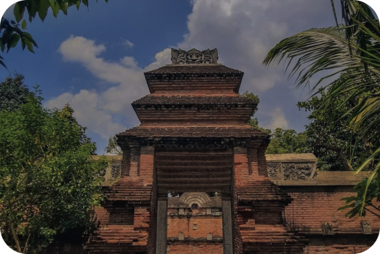

Masa Kejayaan Kerajaan
Tarumanegara
Masa kejayaan Kerajaan Tarumanegara diperkirakan terjadi pada abad ke-5 hingga awal abad ke-7 Masehi. Ini adalah periode ketika kerajaan ini mencapai puncak kekuasaannya dan memiliki pengaruh yang signifikan di wilayah yang sekarang menjadi Indonesia.Kerajaan Tarumanegara memiliki sistem irigasi yang canggih, termasuk kanal-kanal yang dibangun oleh Raja Purnawarman, yang membantu dalam pengembangan pertanian yang subur. Ini berkontribusi pada ekonomi yang kuat dan pertumbuhan penduduk yang signifikan.Kerajaan Tarumanegara diketahui telah mengendalikan sebagian besar wilayah yang sekarang menjadi Jawa Barat, dan mungkin juga memiliki pengaruh di wilayah-wilayah tetangga. Ini menunjukkan keberhasilan mereka dalam memperluas dan menjaga kekuasaan.
Masa kejayaan Kerajaan Tarumanegara juga dikenal karena perkembangan budaya dan agama Hindu di wilayah tersebut. Prasasti-prasasti dan temuan arkeologi mencerminkan pengaruh agama Hindu dalam kehidupan masyarakat pada masa itu.Kerajaan Tarumanegara memiliki sistem pemerintahan yang terorganisir dengan baik, yang diatur oleh raja dan pejabat-pejabat kerajaan. Prasasti-prasasti juga mencatat berbagai prestasi dan konstruksi yang dilakukan oleh raja, seperti pembangunan kanal-kanal.

Komentar